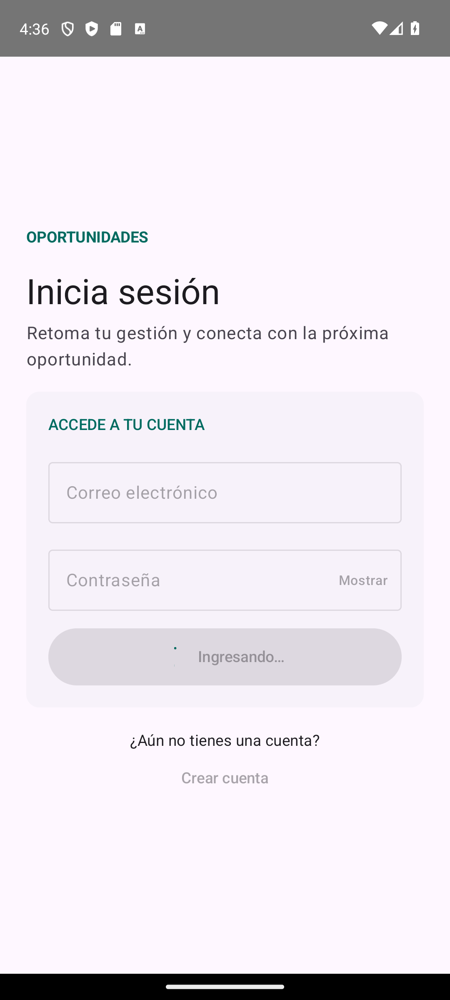
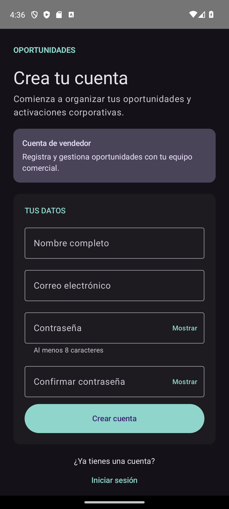

Inicio de sesión y registro
20 de octubre de 2026 · Capturas reales del emulador Pixel 7, Android 14 (API 34).


Validaciones y resultados




Integración y comprobaciones
Los estados LoginUiState y RegisterUiState están en archivos
independientes. Todos los componentes nuevos incluyen previews. El usuario y su
credencial se guardan en una única transacción.
La aplicación compila y las 11 pruebas unitarias existentes pasaron. Consulta el resultado de las pruebas instrumentadas para la verificación de roles, credenciales, validaciones y formularios.
Quedan pendientes la navegación, la sesión compartida, el primer administrador y la autorización de las operaciones del menú. La compatibilidad del hasher existente con Android 7 (API 24–25) debe resolverse antes de admitir esas versiones.
Guía para conectar las pantallas · Informe completo de evidencias